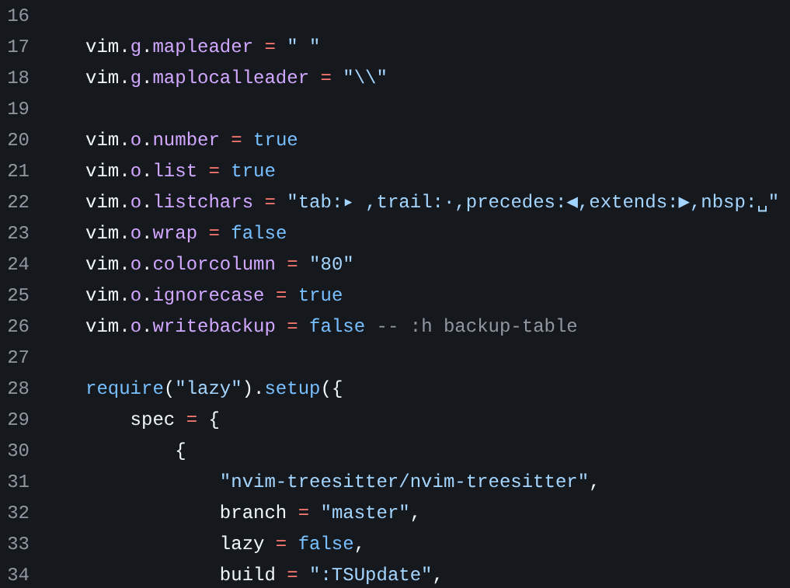

Dotfiles для Nvim v0.10

За прошедший год меня несколько раз спрашивали: каким конфигом NVIM я пользуюсь?
Люблю брать дефолтный NVIM и накидывать минимум плагинов, которые чуть-чуть упрощают жизнь. Для локальной машины добавляю LSP, линтинг, авто-форматтеры и тему.
Единственная особенность конфига – прибиваю гвоздями версии плагинов, чтобы они были совместимы с NVIM v0.10. Некоторые плагины уже требуют v0.11+, но я на Debian и в стабильных репах живёт только v0.10. Бэкпортов пока не завезли…
В общем как-то так, вот репа на GitHub.